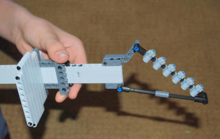
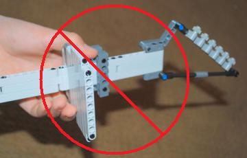
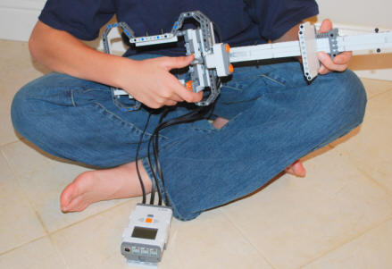
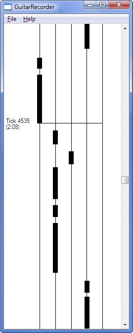

| There are several programs for the Guitar Challenge
Game project, and using them is more complex than a normal NXT program,
so there are some instructions to read here.
Index to Instructions:
Introduction
Game Mode
Song Data Files
Downloading the Game Mode
Programs and Sample Songs
Recording your own Songs on the
NXT
Playing Songs on the NXT
Recording Songs on the PC
Editing Songs on the PC
Program Upgrades and Accessing
Additional Song Files
Program Source Code
Free Play Mode
Copying the Guitar Chord Sounds
to the NXT
Hints for using the Guitar in
Free Play mode
Introduction
Overall there are two modes that you can use the
guitar in: Game Mode and
Free Play mode. In both modes, you choose a note to play by
sliding the flat plate along the neck of the guitar with your left hand
to select the note to play, then press the strum lever with your right
thumb or fingers to play the note.
If the guitar was made with two touch sensors, the
strum lever will trigger on both up and down strokes, otherwise only on
down strokes.
Important: For best results, be sure to keep your left hand
completely behind the sliding plate, so that the ultrasonic sensor sees
only the plate and not your hand, as shown below:
|  |
 |
| Correct: Keep all fingers behind the
sensor plate. |
Wrong: Fingers interfering with the
ultrasonic sensor |
Game Mode
In Game Mode, you are challenged to play along with
notes that are scrolling downward on the NXT screen, optionally
listening to the song from an external source such as a stereo or iPod.
For the Game Mode programs you will want the NXT brick separated from
the body of the guitar as shown in the main
building instructions, so that you can see the screen while playing.
|
 |
|
 |
In Game Mode, the NXT doesn't play the notes of the
music. The game is designed to allow you to listen to the "real"
music on your stereo or iPod and play along with it. The only
sound coming from the NXT will be short beeps when you miss notes.
Song Data Files
The songs that you play are stored in data files on
the NXT, with a separate data file for each song. You can get song
data files onto your NXT in four ways:
-
You can download the
data files for the sample songs provided below to the NXT.
-
You can record your own
songs by "playing along" with your own favorite music using the
GuitarRecord NXT song recording program.
-
Owners of the CD can use the PC (Windows) song recording program
to record and edit their own songs on a PC using the keyboard and
mouse. This provides a much easier and more accurate way to
record your own songs than using the NXT to record. This also
allows you to label your songs with artist, song, and album titles,
reset high scores, and edit/change the recorded notes.
- Owners of the CD also have access to additional
song files submitted by other owners of the game. For more
information, see Program Upgrades and Accessing
Additional Song Files.
Downloading the Game
Mode Programs and Sample Songs
The NXT programs for Game Mode were written in NXC,
which is a programming language that provides lower-level access to the
NXT's capabilities and more speed than the standard NXT-G programming
system. So the programs needed will not load and download in
the same way as other NXT programs on this CD. To load the
programs and sample songs, do the following:
-
Make a folder on your
computer where you will keep the programs and song data files.
For example, on Windows, you might make a folder under "My
Documents" named "NXT Guitar Game".
-
Download the programs
and song files that you want from the table below, and save the
downloaded files in the folder you created in step 1.
|
Downloads (Pick Save to
save to the folder you created above) |
| Programs: |
|
| GuitarGame.rxe |
For playing the guitar game on the NXT
(compiled NXT program file) |
| GuitarRecord.rxe |
For recording your own songs on the NXT
(compiled NXT program file) |
| GuitarRecorder.exe |
For recording, labeling, and editing
songs on a Windows PC |
| |
|
| Sample Songs: |
(All
Sample Songs in a zip file) |
| Song 1.gcs |
"Happy Birthday" practice song (no music
accompaniment) |
| Song 2.gcs |
"Smoke on the Water" by Deep Purple
(first 1 min) |
| Song 3.gcs |
"Hit Me with Your Best Shot" by Pat
Benatar (full song) |
| Song 4.gcs |
"It's Not My Time" by 3 Doors Down (full
song) |
| Song 5.gcs |
"Back in Black" by AC/DC (full song) |
| Song 6.gcs |
"Carry on Wayward Son" by Kansas (first 1
min) |
| Song 7.gcs |
"Through the Fire and Flames" by
Dragonforce (first 1 min) |
-
Start the NXT programming
software on your computer, connect your NXT, start a new blank
program, then open the "NXT Window" from the controller in the lower
right, and select the Memory tab as shown below.
-
Delete any unneeded programs and sounds from your NXT to free up as
much memory as possible by selecting the "Program" and "Sound"
categories, selecting items from the list, and pressing the Delete
button, or just press the "Delete All" button to remove all programs
and sounds from the NXT.
-
Press the Download
button on the Memory tab shown above, then locate the
GuitarGame.rxe file that you saved on your computer in step 2
and download it to the NXT. Repeat for GuitarRecord.rxe.
-
To download sample
songs (the files named "Song xx.gcs"), press the Download
button, then in the dialog that locates the file, specify that you
want to look for "Files of type" All Files. Locate the
sample song you want (that you saved in step 2) and download it.
The file will appear in the "Other" category on the Memory tab.
Repeat for each sample song that you want.
Recording your own Songs on the NXT
To record your own songs on
the NXT, run the GuitarRecord program on the NXT. The song
will start recording as soon as you strum the first note, and stop
recording when you press the orange Enter button on the NXT.
In Game Mode there are five
note positions corresponding to the five "strings" shown on the screen.
You can "play" whatever notes (positions) you want, and your note
selection and timing will be recorded. No sound will be played by
the NXT. Recording is designed to synchronize along with external
music that you are listening to on your stereo or iPod (or you can just
play to an imaginary song from memory if you want).
When listening to
music that you want to synchronize the song with, a good strategy is:
-
Start the
GuitarRecord program and get ready to play.
-
Start the song on your
stereo or iPod.
-
Wait for a logical
place near the beginning of the song to start your first note.
It shouldn't be right at the beginning, because this will be too
hard to anticipate when playing back. Give yourself the
opportunity to hear the tempo and start the first note in a logical
place that will be easy to anticipate when playing back.
-
Play your first note at
the right time, then choose and play more notes in sync with the
music. Hold the strum button down to make long notes.
The whammy bar doesn't do anything in Game Mode.
-
Press the Enter button
on the NXT when done recording. The song will be given a data
file name something like "Song xx". The Artist and Song title
information will be filled in to indicate the NXT recorder.
Playing Songs on the NXT
To play the guitar game on
the NXT, run the GuitarGame program on the NXT and choose the
song to play using the NXT buttons. When you get to the game
display with the "fret strings", the song will start playing as soon as
you strum the first note. So, if you are playing along with
external music:
-
Get the song ready to
play in the GuitarGame program
-
Start the song on your
stereo or iPod.
-
Play the start of the
first note at the correct time. You will need to know when the
first recorded note of the song is in order to anticipate it and
play it at the right time. If you play the first note at the
wrong time, all of the notes in the song will be displayed out of
synch with the music. For songs you recorded, you will need to
remember where the first note is. For the sample songs and
songs you record on the PC, the song will specify the approximate
starting time of the first note in seconds from the beginning of the
song. For example, if the song says to start 0:08, then the
first game note will be approximately 8 seconds from the very
beginning of the song. Note that this time is approximate, the
exact time will be in sync with a logical/clear guitar note in the
song.
-
At the end of the
recorded notes, your number of missed notes and score (percent
correct) will be displayed. If you beat the best high score
for that song so far, the new high score will be saved.
Recording Songs on the PC
Owners of the CD can also
record songs on the PC using the keyboard, which is easier and more
accurate than recording on the NXT, and you can also edit the result
with the keyboard and mouse, and record the song in several stages if
you want to. To record a new song on the
PC:
-
Run the
GuitarRecorder program on the PC (requires a PC that can run
Windows).
-
Start the song on your
stereo or iPod, and at the same time (the very beginning of the
song, not the first game note), press the Space bar on the PC to
start the song timer. Starting the timer at the beginning of
the song will allow GuitarRecorder to calculate the estimated time
of the first game note.
-
Record notes using the
keys 1-5 on the PC keyboard, starting the first note at a logical
time.
-
(Optional) Edit the
song to fix recording mistakes (see below).
-
Enter artist, song
title, and album info using the menu choice File
=> Edit Song Info. Here you can also specify the
approximate time in seconds for the first game note if it was not
automatically calculated.
-
Save the song. In
order for the NXT game program to find them, all song files must be named
"Song xx.gcs", where xx
is a number from 1 to 99. To keep your files organized and ensure that you
don't overwrite another file, save all of your song files in the
same folder (the same folder as the programs and sample songs), and
make sure you choose a unique number 1-99 when saving it.
-
To play the song you
recorded, you will need to download it to the NXT, similar to the
way you downloaded the sample songs.
Editing Songs on the PC
Owners of the
GuitarRecorder PC program on the CD can also edit songs, assign
the artist, song title, and album name information, and reset high scores.
Note that you can also edit songs that were recorded on the NXT if you
upload them from the NXT to the PC from the Memory Tab in the NXT
Window.
|
To edit a song using the
GuitarRecorder program, open it from the File menu, make your
changes, then save it from the File menu. You can edit
artist/song/album/score info with File => Edit
Song Info. See the Help menu
for editing operations you can do to edit the notes of the song.
Remember to re-download your edited song to the NXT.
Here are some hints
for editing songs on the PC using the GuitarRecorder
program:
-
You have five
note positions to work with. Come up with a basic plan
for how you will use the five notes for a section in the
song and practice it a bit on the keys before recording it.
-
You can record
a song in sections if you use reference points in the song
for where to restart the recording timer. This allows
you to plan and re-try certain portions until you get them
close enough to fine tune edit by hand. Here is how:
-
After
recording one section, stop the timer with the Space
bar.
-
Scroll back
to a reference point in the music graph that you know,
using the scroll bar and arrow keys. For example,
in the picture to the right, the song has been stopped
and scrolled back to the beginning of a recognizable
note at the beginning of a beat, which is at about 2:08
in the song.
-
Rewind your
music player to before the reference point (e.g. a few
second before 2:08 in this example).
-
Listen for
the reference point in the music (near 2:08), then press
the Space bar exactly at the reference point to restart
the timer and start recording again.
-
To erase
portions of a song before re-recording them, start the
timer, then press and hold the 0 (zero) key to erase notes
at the recording point.
-
You can fine
tune and fix minor errors in the recording using the mouse
when the timer is stopped Click and drag with the left
button to "draw" a note on a string, and click and drag with
the right button to erase notes.
-
Remember to
save a song after editing it.
|
 |
Program Upgrades and
Access to Additional Song Files
Owners of the CD have access to free program upgrades
and additional song files contributed by other owners of the game, at
the following web site:
Web site:
http://www.nxtprograms.com/guitar_game/upgrade
User Name: guitargame
Password: 15131197
Program Source Code
Owners of the CD also have access to a copy of the
source code for the GuitarGame and
GuitarRecord NXT programs, as well as the
GuitarRecorder program for Windows, so that they can learn how they
are implemented or make modifications for their own use. See the
"Source Code" folder on the CD.
Note: The source code for the
programs is copyrighted and cannot be published in any form without
written permission from nxtprograms.com. This includes modified
versions. If you use the source code to build a modified version
of the game or recording programs, you may only use them for your own
use. You may not publish the modified source code, nor can you
publish the modified version of the executable programs.
Free Play Mode
In Free Play mode, the NXT’s built-in speaker will
make its own musical notes, and you can play the guitar like an
instrument by itself. There are 8 different notes from the "Blues
Scale" that correspond to 8 different positions of the fret slider.
The Free Play programs will draw a graph of the tones being playing on
the screen that you can watch if you want.
In Free Play mode, you can install the NXT brick into
the body of the guitar as shown above to make it more portable (see the
Free Play conversion instructions), or
you can leave the NXT outside as in Game Mode so that you can see the
tone graph drawn by the Free Play mode programs.
There are two Free Play
programs that give you two different variations:
-
The
GuitarFreeTones
program plays tones for the notes using the NXT's tone generator.
When playing tones, you can hold the strum lever down to hold a long
note. You can also use the "whammy bar" to add whammy effects
to a long tone. To use the whammy bar, position the whammy bar
angled against its rubber support, strum and hold a note with your
thumb, then push the whammy bar down and up with your fingers or
palm (towards the light sensor) after strumming the note.
-
The
GuitarFreeChord program will play some
cool recorded guitar “power chord” sounds to make your electric
guitar sound more realistic. However, to use this program, you will
first need to copy some recorded guitar chord sound files to the NXT
Sounds folder on your computer as described in the next section
below.
In addition to needing the guitar sound files, the
GuitarFreeChord
program has a few other restrictions that
you should know about:
-
The recorded guitar
chord sounds take a lot of memory on the NXT, so you may need to
delete other programs that you have downloaded to your NXT to
make room. And when you are done using the guitar and need more
memory for other programs, you should delete the sound files
from the NXT.
-
Due to memory constraints, the guitar chords
will only play for about ½ second for each press, so you can‘t
hold long notes. Use it like a “rhythm guitar” and keep
strumming!
- The whammy bar doesn't do anything when
playing chords.
Copying the Guitar
Chord Sounds to the NXT
Before you can download and use the
GuitarFreeChord program,
you need to copy the special guitar chord sounds to a location on your
computer where the NXT software can find them. To do this:
-
Locate and open the
NXT Sounds folder on your computer. On most computers, this is:
Windows: C:\Program Files\LEGO Software\LEGO MINDSTORMS
NXT\engine\Sounds
Mac: Applications > LEGO MINDSTORMS NX > engine > Sounds
-
Open the package of
Guitar Chord
Sounds (a .zip file) and open it to locate
the eight guitar sound (.rso) files. If your computer
cannot open .zip files, you can download the eight sound files
individually from here.
-
Copy (select and drag) all eight of the
guitar chord sound files (.rso) to the NXT Sounds folder on your
computer.
- Download the
GuitarFreeChord
program to the NXT after installing the sounds.
Hints for using the
Guitar in Free Play mode
Playing music in Free Play mode is tricky and takes
some practice. The ultrasonic sensor is very sensitive to the
exact position of the fret slider. Here are a few tips:
-
Make sure your left
hand is positioned behind the slider, so that the ultrasonic sensor
sees only the sliding flat plate, not your hand.
-
Slight changes in the
angle of the sliding flat plate can cause the note to change.
It helps to apply a slight twisting pressure to the plate in one
direction so that its angle does not "chatter" around from side to
side.
-
Experiment to find the
positions of the 8 notes. Adjust the slider stopper pegs if
necessary. Then watch the fret board to hit the positions you
remember. Better yet, insert pegs into the neck of the guitar
at the right locations to mark the center of each note position.
-
When playing a note,
stop the previous note, then quickly move the slider into position
for the next note slightly before the note and get it to stop as
fast as possible, then strum the note at the right time.
-
You will not be able to
play all notes, only the 8 notes from the Blues
Scale as shown below. You will have to experiment to see
which tunes this will allow you to play.
-
Practice very easy
tunes first and slowly work your way up to harder tunes.
|